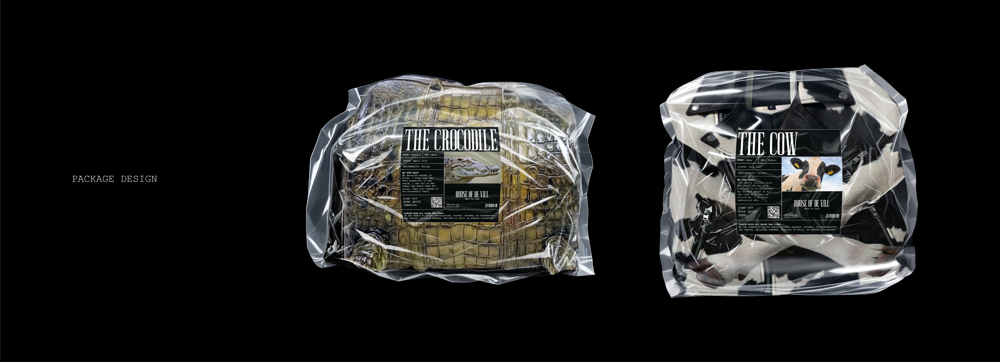
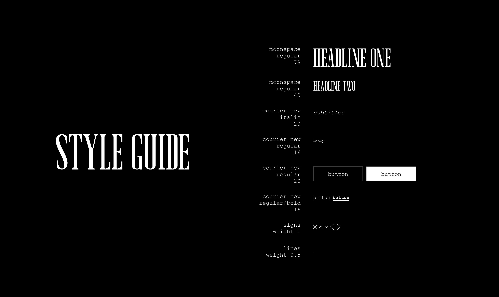
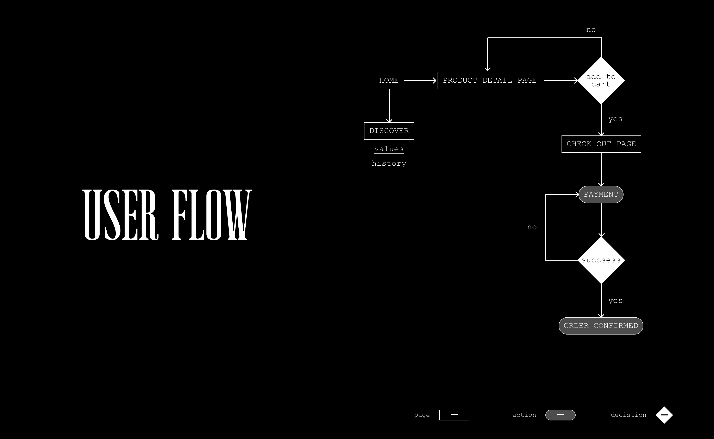

House Of De Vill


about
House of De Vill is a conceptual high-fashion digital platform inspired by Cruella De Vil, the iconic villain from Disney's 101 Dalmatians. Her entire essence revolves around a collection of high-end fur coats. Throughout the story, she abducts 101 Dalmatian puppies to create the 'ultimate coat' from their fur. The project explores the intersection of extreme narcissism, material addiction, and the ethical boundaries of consumerism.
Inspired by the psychological complexity of Cruella, the project challenges the "denial of production" in the fashion industry. While traditional brands obscure the origin of their materials, House of De Vill forces a confrontation between the wearer and the source. It is an experience designed to evoke discomfort, stripping away the privilege of ignorance.
research
My research focused on translating Cruella's physical and psychological traits into a structured design system. Narcissistic personality disorder, distinctive hair, extreme thinness, obsessive smoking, and chaotic driving are all metaphors for her manic pursuit of the perfect coat, accompanied by an extreme worldview and a complete belief that her desires are more important than any moral or humane principle.
I used AI-Generated Fashion to create a high-fashion collection that incorporates real biological elements. The prompts were designed to explore the tension between luxury and visual discomfort. To showcase the collection, I created a series of fashion editorials set in a chaotic and melancholic environment—a visual metaphor for Cruella's internal world.


